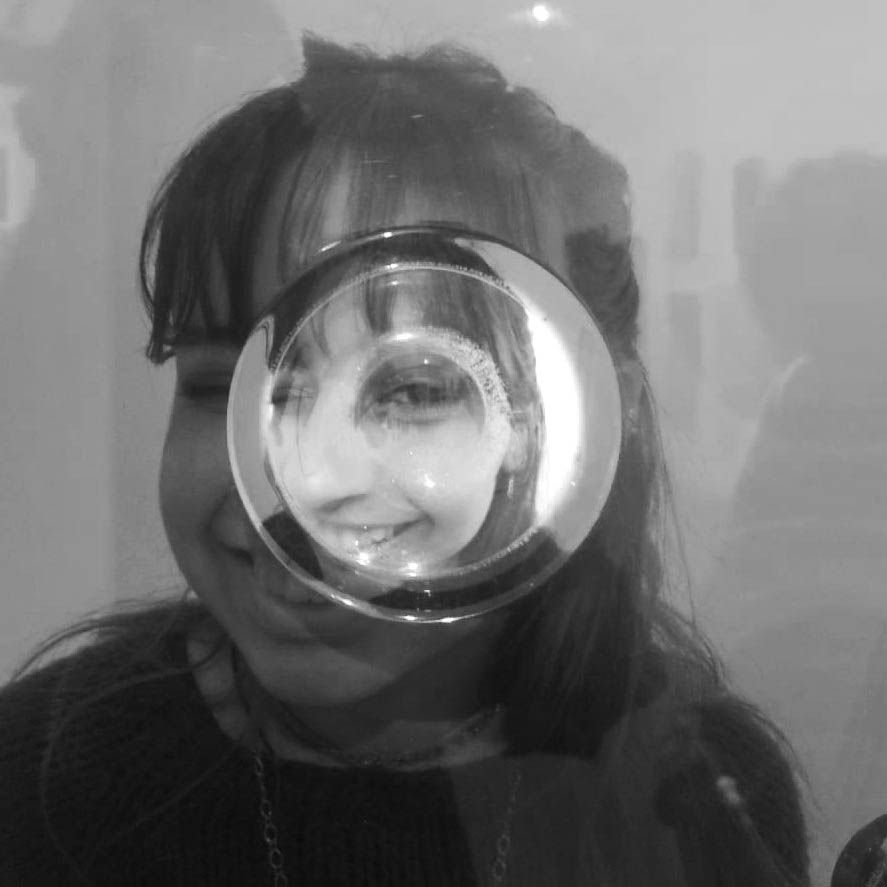

Selene Rodriguez
Diseñadora Gráfica Junior
¡Bienvenidx a mi portfolio!
Sobre mi
¡Hola! Soy Sele. Soy estudiante de Diseño y Comunicación Visual en la Universidad Nacional de Lanús y actualmente curso mi cuarto año. Tengo 21 años y vivo en Buenos Aires, Argentina. Mis principales intereses y fortalezas se encuentran en el diseño editorial y el desarrollo de identidades visuales, aun así disfruto adaptarme a distintos tipos de proyectos y desafíos. Mi objetivo es siempre alcanzar un resultado óptimo, combinando mis conocimientos académicos con el aprendizaje autodidacta y las experiencias que fui construyendo a lo largo de mi formación. Me entusiasma seguir aprendiendo, explorar nuevas ideas y encontrar soluciones visuales que logren comunicar de manera efectiva. ¡Encantada de trabajar juntos!

- Illustrator
- InDesign
- Photoshop
- Canva
-
Edición
de videos
Mis herramientas de trabajo
Actualmente trabajo principalmente con programas de Adobe (como Illustrator, InDesign, Photoshop) y con otros programas orientados al diseño y edición, como Canva, CapCut y Figma.
Educación
- Bachiller en Comunicación (Colegio Secundario Colinas Verdes) 2017-2022
- Licenciatura en Diseño y Comunicación visual (Universidad Nacional de Lanús) 2023-En curso